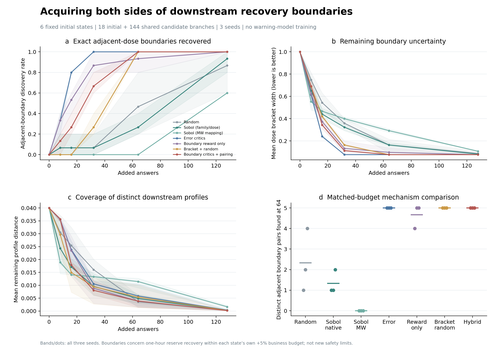
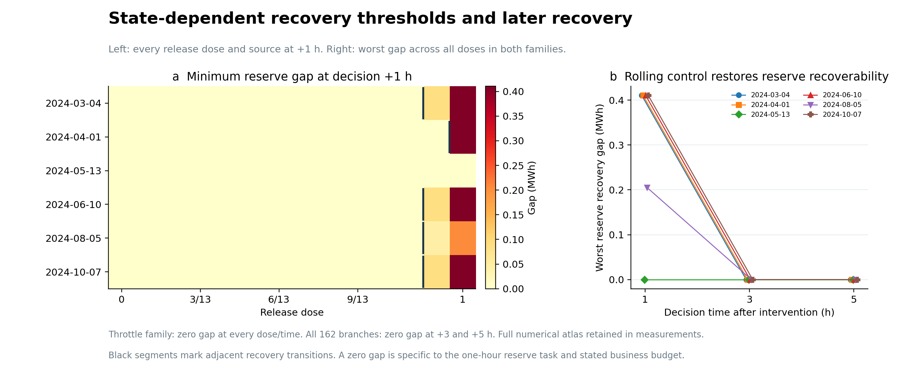
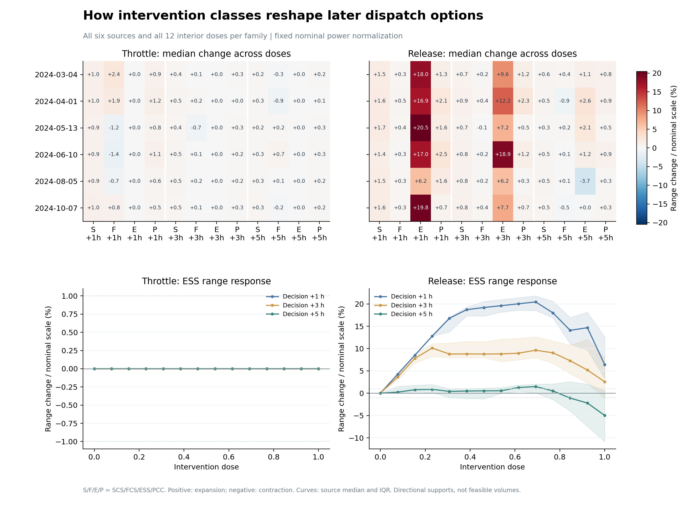

本轮冻结容量、风险阈值、原物理代码、旧RL和全部预警器。新增学习仅发生在信息采集器，接续仍为动态偏好有限信息MPC。目标是使采集经验覆盖不同后续调度后果，并把同状态下恢复边界定位到相邻剂量格。
| 方法 | 相邻边界定位率 | 找到的边界对 | 剩余括区宽度↓ | 画像覆盖距离↓ |
|---|---|---|---|---|
| Random | 46.7% | 2.3/5 | 0.164 | 0.00361 |
| Sobol (family/dose) | 26.7% | 1.3/5 | 0.164 | 0.00488 |
| Sobol (MW mapping) | 0.0% | 0.0/5 | 0.292 | 0.01145 |
| Error critics | 100.0% | 5.0/5 | 0.077 | 0.00587 |
| Boundary reward only | 93.3% | 4.7/5 | 0.097 | 0.00382 |
| Bracket + random | 100.0% | 5.0/5 | 0.077 | 0.00541 |
| Boundary critics + pairing | 100.0% | 5.0/5 | 0.077 | 0.00386 |

表为三seed均值；共同初始18条，候选144条。边界对是同source、同动作族、相邻lambda格的两条真实分支，至少一个未来时点的可恢复状态不同。两端各计一次查询；初始0和1只粗括边界，不算已经定位相邻边界。128查询的饱和结果、每个source和所有seed保留于analysis.json及acquisition目录。
这轮首先证明了成对采集闭环确实能够定位同状态下不同的后续恢复能力。64次查询时，混合方法在三个seed中均找到全部5对真实边界；Random平均定位46.7%，直接在动作族—剂量域采样的Sobol定位26.7%。此前的51维MW映射Sobol会把候选集中在线段中部，现作为补充行保留，主Sobol比较采用原生参数域版本。
新的采集目标还改变了所获得经验的结构。在同样100%边界定位率下，混合方法相对误差驱动的剩余画像覆盖距离下降34.2%，source配对差值95% CI为[0.00015, 0.00537]。这支持“仅追逐预测误差与覆盖不同调度后果是两个目标”的判断。混合方法相对括区加随机的平均覆盖距离下降28.6%，但source区间跨零；相对Random的覆盖距离也没有稳定优势。因此，本轮清楚支持任务分解与兼顾边界/形态的采集设计，尚不能把全部增益归给RL。
每个候选实际推演六小时，保留+1、+3、+5小时的真实决策视图。在原六小时线性MPC网络与资源约束下，求SCS/FCS/ESS/PCC下一小时功率的支持极值，并求下一小时恢复至同future时点参考ESS余量所需的最小缺口rho。业务目标不能超过该候选状态自身最优值的5%增量。rho为零意味着该预算内能恢复；正缺口表示恢复受限，不直接等同于电网故障。5%及一小时期限是审查任务设置，未改变四类风险的原始判据。

左图显示六个source的release族全部14个剂量（含公共端点），颜色是连续储备缺口，黑线为相邻格的恢复状态转换；右图用两族全部动作的最坏缺口展示随时间恢复。Throttle族所有剂量/时点均为零，已用图注压缩呈现，完整数值保留。它解释边界在哪里、是否随接续时间移动，以及不同source是否具有不同可恢复区域。所计算的支持区间属于给定业务预算内的线性MPC计划集合，不是完整AC域体积。
恢复受限具有明确的状态依赖性和时效性。March、June、August、October的release分支在11/13与12/13之间跨越边界；April在12/13与完整释放端点之间才跨越；May即使完整释放也仍可恢复。因此，同一动作类别不能对应一个脱离状态的统一强度阈值。全库486个future状态中只有9个恢复缺口为正，全部位于+1小时；到+3与+5小时，该恢复任务在162条分支上均可实现。这描述的是短期恢复能力受到挤压、随后又被滚动控制恢复的过程，不意味着既有服务损失也已被消除。
本轮边界的形成机制还能直接核验。仅由当前ESS能量、下一小时充电上限和0.95效率计算的必要缺口下界，与486个完整MPC最小恢复缺口逐项一致，最大差为0。这表明当前恢复难例主要由储能回充速率决定，业务预算与网络约束没有进一步抬高此任务的缺口。这也解释了为什么简单括区细化能达到很强的结果；它是后续选择更复杂、真正耦合的恢复任务的依据。

这张组合图把所有内点动作纳入类别统计。上排展示每个source、每类动作在三个future时点、四类调度方向的中位变化；下排给出全剂量ESS响应的source中位数与四分位范围。变化以固定名义功率标尺归一化，正值表示扩大、负值表示收缩；因此可以检验资源释放是否在后续某些方向上留下收缩，以及扩大/收缩是否随时间转向，而无需只挑一个代表动作。
本轮最值得保留的机制发现是：调度跨度变宽，并不等于关键恢复能力更强。9条恢复受限分支中，8条在+1小时的ESS功率支持区间反而比参考更宽；放出能量打开了新的充电余量，却仍可能来不及恢复参考储备。另一方面，78条释放动作分支中有19条跨4个source呈现+1小时扩大、+5小时收缩的转向（按预定1%名义功率容差）。因此，未来调度能力应以方向和任务共同描述，不能只压成一个“可行域越大越好”的标量。这些是完整物理库的机制统计，区别于某个采集器新增发现的数量。
Random与Sobol在同池采样；Error critics只学习冻结旧模型对18个同名物理端点的配对预测误差；Boundary reward only只改变学习目标；Bracket + random只使用已揭示可恢复/不可恢复端点细化一半查询；Boundary critics + pairing把新目标与同样的成对细化结合。后三者用于判断提升来自学习到的画像价值，还是来自显式的括区协议，不能将二分细化的全部增益归给RL。
新奖励把固定标尺的画像新颖性、已揭示相邻动作的恢复差异、范围扩大/收缩的转折差异各占三分之一。Q训练只见已经付费揭示的经验；未来视图、缺口和全集边界不在公共候选特征内。各学习臂统一接收18维已查询知识摘要，描述附近动作、已知两侧恢复状态和括区；新学习仍使用原128宽双critic，未增加网络层数或宽度。采集为gamma=0的有限池上下文任务，actor不作为本轮提案器。
先在各source内平均三个seed，再对独立source作配对bootstrap 2000次。以下为混合采集器在64查询时相邻边界定位率的绝对增益：
相对Random：+53.33pp，95% CI [+40.00, +66.67]，有效source=5。
相对Sobol (family/dose)：+73.33pp，95% CI [+53.33, +93.33]，有效source=5。
相对Sobol (MW mapping)：+100.00pp，95% CI [+100.00, +100.00]，有效source=5。
相对Error critics：+0.00pp，95% CI [+0.00, +0.00]，有效source=5。
相对Boundary reward only：+6.67pp，95% CI [+0.00, +20.00]，有效source=5。
相对Bracket + random：+0.00pp，95% CI [+0.00, +0.00]，有效source=5。
画像覆盖距离的source配对差值如下，正值表示混合方法的剩余距离更小：
相对Random：-0.000257，95% CI [-0.003134, +0.001799]，source=6。
相对Sobol (family/dose)：+0.001015，95% CI [-0.005998, +0.007915]，source=6。
相对Sobol (MW mapping)：+0.007583，95% CI [+0.003291, +0.011713]，source=6。
相对Error critics：+0.002005，95% CI [+0.000150, +0.005368]，source=6。
相对Boundary reward only：-0.000039，95% CI [-0.000358, +0.000290]，source=6。
相对Bracket + random：+0.001545，95% CI [-0.000386, +0.004976]，source=6。
保留第64次查询时的critic检查点，在该时点尚未查询的80个候选上，只读比较Q排序与真实查询效用。每个source单独计算Spearman，再平均source与seed；这些答案只用于事后评价，未回流采集训练。它检验的是本有限池中剩余动作价值的排序，区别于预警器的风险预测能力。
| 学习配置 | 与自身目标的排序相关 | 与机制信息目标的排序相关 |
|---|---|---|
| Error critics | 0.727 | -0.135 |
| Boundary reward only | 0.019 | 0.019 |
| Boundary critics + pairing | 0.087 | 0.087 |
误差驱动对自身目标的排序相关为0.727，而混合方法对机制信息目标仅0.087；只改奖励为0.019。相同规模网络能够较好学习平稳的误差目标，却没有学准当前随经验集合变化的边际信息价值。当前18维知识摘要显式记忆的是查询位置、0/1恢复状态和转折，没有把已观测的连续调度范围与缺口直接交给critic；这应优先作为下一版任务输入的改进点，而非先扩大网络。
共同库共162分支，972小时AC核验通过，未核验0小时，未知完整画像0条。逐小时检查电压0.93–1.07pu、0.9kA线路限额、机组边界、节点平衡和车辆/储能能量守恒。首动作发生有界裁剪0条、预测分配保护调整6条。额外有功处置143小时，记录非EV削负荷5.253MWh；这些是当前保护控制器输出，未被解释成物理上不可避免的最低代价。
四类原始风险的分支级支持如下，恢复任务没有替换这些物理标签：
| 风险 | 正 | 负 | 未知 |
|---|---|---|---|
| Voltage | 0 | 118 | 44 |
| NetworkCapacity | 0 | 162 | 0 |
| ChargingService | 14 | 148 | 0 |
| RenewableCurtailment | 162 | 0 | 0 |
最终AC可核验与“常规有界Q是否足以恢复”是两个问题，44条Voltage未知保持未知。该库的RE全为正、NetworkCapacity全为负，不能承担完整四头预警性能验证；本轮保持预警器不动，先验证信息采集的做法是必要的。后续应增加自然不同日期/时段与多方向干预，保留容量阈值，补充服务期限和可再生吸收余量等真正相互耦合的恢复任务。
共同建库的真实仿真费用与每臂答案揭示预算分开：162条分支中匹配复用已有6条，新增156条；每臂128答案按8/16/32/64/128前缀比较。该轮检验六个历史初态上的采集与细化能力，不把全库预计算成本隐藏为在线节约。预警器和旧模型训练调用均为0；新采集模型三种学习配置×3seed共9次CPU拟合。
项目：D:\博士资料包\科研\科研\AAAI_RL\tarp_37_information_acquisition。
Set-Location -LiteralPath 'D:\博士资料包\科研\科研\AAAI_RL\tarp_37_information_acquisition'
powershell -NoProfile -ExecutionPolicy Bypass -File .\scripts\run_boundary_acquisition.ps1 -RunId boundary_formal_s42_v2 -Stage fit
Stage fit验证并复用已有教师、公共/私有数据和全部采集结果，仅重建分析。新完整实验使用新RunId与Stage all。原始分支、MPC求解状态、边界对账本、各seed查询顺序、输入与模型hash均在artifacts/boundary_v2/boundary_formal_s42_v2。